Teachers & Staff
| Professor Ralf GREVE 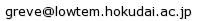 |
Dynamics of ice sheets and glaciers Planetary glaciology |
| Professor Shin SUGIYAMA 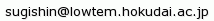 |
Mass loss of the ice sheet, glaciers and ice caps in Greenland Dynamics of calving glaciers in Patagonia Ice Field Ice sheet and glacier dynamics in the Antarctic coast |
| Associate professor Yoshinori IIZUKA 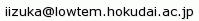 |
Ice core study (Greenland,Antarctic...) |
| Assistant professor Masahiro MINOWA 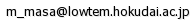 | Mass loss of the Patagonian icefields Glacier frontal ablation |
| Ambitious Special Asst. Prof. Shuntaro HATA 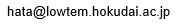 |
Changes in freshwater carving glaciers in Patagonia, South America Glacial lake changes in Patagonia and Antarctica |
| Researcher Ryo KUSAKA |
Performance evaluation of Inuit fur clothing Snow surface undulation analysis using snowmobile vibration Development of simple snow shear strength measurement method |
| Postdoctoral Researcher Wang YEFAN 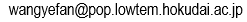 |
Surface elevation changes of glaciers along the coast of northwestern Greenland |
| Postdoctoral Researcher Kaoru KAWAKAMI 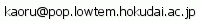 |
Particles in SIGMA-A ice core, northwestern Greenland | Research Assistant Takeshi SAITOH 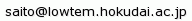 |
| Research Assistant Junko ARAKAWA |
|
| Research Assistant Kyoko GOTODA |
Students
| D3 Izumi ASAJI 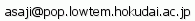 |
Mechanisms of ice front variation at calving glacier, northwestern Greenland |
| D3 Ken KONDO 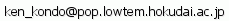 |
Dynamics of the outlet glaciers in Lützow-Holm Bay, east Antarctica |
| D1 Mai MATSUMOTO 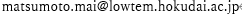 |
Near-infrared reflectance in ice core, Arctic |
| M2 Tom Dangleterre |
multi phase spin up method for the Antarctic ice sheet |
| M2 Takuro IMAZU 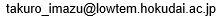 |
Analysis of glacier melt and river discharge using a melt runoff model |
| M2 Shinta UKAI |
Observation of glacier fluctuations using UAV |
| M2 Ken SATO 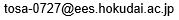 |
Glacier interior and floor exploration using ice radar |
| M1 Jia-Yan CHANG 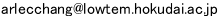 |
|
| M1 Nonoka MINESHIGE 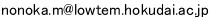 |
|
| M1 Soratakato YAMADA 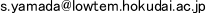 |
|
| M1 Syun SHINOHARA |
|
| M1 Hiroto SAKATA |
|
| M1 Jyunya SHIMIZU |